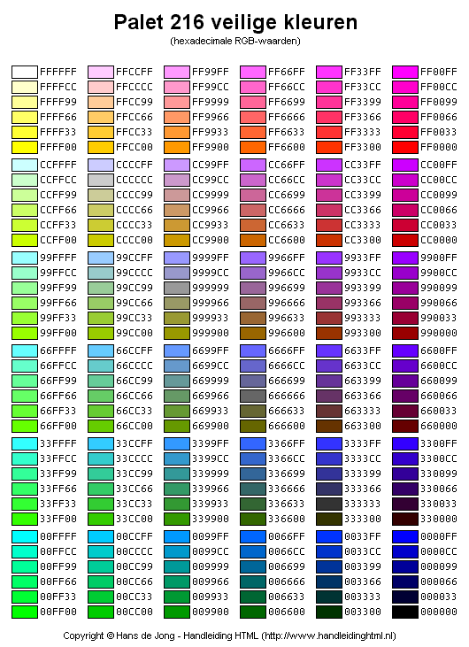

inhoudsopgave
Wat zijn kleurmodellen
Voorbeelden
Waarvoor worden kleurmodellen gebruikt
kleurmodellen
Kleurmodellen zijn systemen die worden gebruikt om kleuren te representeren en te beheren in verschillende toepassingen,zoals fotografie, drukwerk en digitale beeldverwerking
Voorbeelden:
RGB (Rood, Groen, Blauw):
RGB is een additief kleurmodel dat veel wordt gebruikt voor digitale weergave, zoals computermonitors, televisies en digitale camera's.
Kleuren worden gemaakt door verschillende intensiteiten van rood, groen en blauw licht te combineren.
CMY (Cyaan, Magenta, Geel) en CMYK (Cyaan, Magenta, Geel, Zwart):
CMY is een subtractief kleurmodel dat vaak wordt gebruikt in drukwerk en kleurmenging met verf.
In dit model worden kleuren gemaakt door cyaan, magenta en geel pigmenten te mengen.
Pantone:
Pantone is een kleurensysteem dat vaak wordt gebruikt in de grafische en drukindustrie.
Het biedt gestandaardiseerde kleurnummers en kleurenwaaiers om consistentie in kleurweergave te waarborgen.
Waarvoor worden kleurmodellen gebruikt
Elk kleurmodel heeft zijn eigen toepassingen en voordelen, afhankelijk van de specifieke behoeften van een project.
De keuze voor een kleurmodel hangt vaak af van factoren zoals het doel van het ontwerp, de afdrukmethode en de beoogde kleurnauwkeurigheid.
"kleurmodellen filmpje"